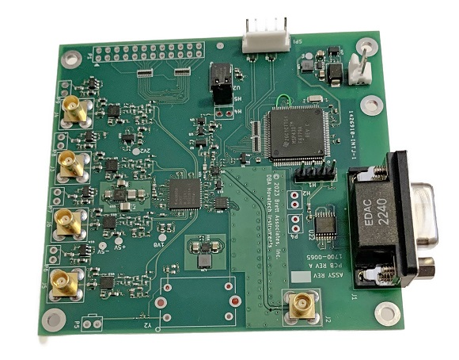

DDS9m

Model DDS9m 170MHz 4-channel signal generator. The DDS9m generates four independent, phase synchronous sine wave output signals and is programmable in 0.1Hz steps from 0.1Hz to 171MHz.
Programming is via an RS232 serial interface. Phase is 14-bit programmable and amplitude is 10-bit programmable. The DDS9m is accurate to 1.5ppm when using the onboard TCXO timebase, or an external timebase can be used. It requires 3.3VDC power. SOF8_409 Windows software is available as an extra-cost accessory.